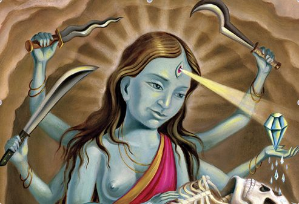

People come from all over the world to Arizona’s Diamond Mountain University, hoping to master Tibetan teachings and achieve peace of mind. For some, the search for enlightenment can go terribly wrong.
Ian Thorson was dying of dehydration on an Arizona mountaintop, and his wife, Christie McNally, didn’t think he was going to make it. At six in the morning she pressed the red SOS button on an emergency satellite beacon. Five hours later a search-and-rescue helicopter thumped its way to the stranded couple. Paramedics with medical supplies rappelled off the hovering aircraft, but Thorson was already dead when they arrived. McNally required hospitalization. The two had endured the elements inside a tiny, hollowed-out cave for nearly two months. To keep the howling winds and freak snowstorms at bay, they had dismantled a tent and covered the cave entrance with the loose cloth. Fifty yards below, in a cleft in the rock face, they had stashed a few plastic tubs filled with supplies. Even though they considered themselves Buddhists in the Tibetan tradition, an oversize book on the Hindu goddess Kali lay on the cave floor. When they moved there, McNally and Thorson saw the cave as a spiritual refuge in the tradition of the great Himalayan masters. Their plan was as elegant as it was treacherous: They would occupy the cave until they achieved enlightenment. They didn’t expect they might die trying.
Almost irrespective of the actual spiritual practices on the Himalayan plateau, the West’s fascination with all things Tibetan has spawned movies, spiritual studios, charity rock concerts and best-selling books that range from dense philosophical texts to self-help guides and methods to Buddha-fy your business. It seems as if almost everyone has tried a spiritual practice that originated in Asia, either through a yoga class, quiet meditation or just repeating the syllable om to calm down. For many, the East is an antidote to Western anomie, a holistic counterpoint to our chaotic lives. We don stretchy pants, roll out yoga mats and hit the meditation cushion on the same day that we argue about our cell phone bill with someone in an Indian call center. Still, we look to Asian wisdom to center ourselves, to decompress and to block off time to think about life’s bigger questions. We trust that the teachings are authentic and hold the key to some hidden truth. We forget that the techniques we practice today in superheated yoga studios and air-conditioned halls originated in foreign lands and feudal times that would be unrecognizable to our modern eyes: eras when princely states went to war over small points of honor, priests dictated social policy and sending a seven-year-old to live out his life in a monastery was considered perfectly ordinary.
Yoga, meditation, chakra breathing and chanting are powerful physical and mental exercises that can have profound effects on health and well-being. On their own they are neither good nor bad, but like powerful lifesaving drugs, they also have the potential to cause great harm. As the scholar Paul Hackett of Columbia University once told me, “People are mixing and matching religious systems like Legos. And the next thing you know, they have some fairly powerful psychological and physical practices contributing to whatever idiosyncratic attitude they’ve come to. It is no surprise people go insane.” No idea out of Asia has as much power to capture our attention as enlightenment. It is a goal we strive toward, a sort of perfection of the soul, mind and body in which every action is precise and meaningful. For Tibetans seeking enlightenment, the focus is on the process. Americans, for whatever reason, search for inner peace as though they’re competing in a sporting event. Thorson and McNally pursued it with the sort of gusto that could break a sprinter’s leg. And they weren’t alone. More than just the tragedy of obscure meditators who went off the rails in nowhere Arizona, Thorson’s death holds lessons for anyone seeking spiritual solace in an unfamiliar faith.
Until February 2012, McNally and Thorson were rising stars among a small community of Tibetan Buddhist meditators and yoga practitioners who had come to the desert to escape the scrutiny and chaos of the city in order to focus on spiritual development. McNally was a founding member of Diamond Mountain University and Retreat Center – a small campus of yurts, campers, temples and retreat cabins that sprawls over two rocky valleys adjacent to historic Fort Bowie in Arizona. In the past decade Diamond Mountain has risen from obscurity to become one of the best known, if controversial, centers for Tibetan Buddhism in the United States. Its supreme spiritual leader is Michael Roach, an Arizona native, Princeton graduate and former diamond merchant who took up monk’s robes in the 1980s and remains one of this country’s most enthusiastic evangelists for Tibetan Buddhism. McNally was Roach’s most devoted student, his lover, his spiritual consort and, eventually, someone he recognized as a living goddess. For 14 months McNally led one of the most ambitious meditation retreats in the Western world. Starting in December 2010 she and 38 other retreat participants pledged to cut off all direct contact with the rest of the planet and meditate under vows of silence for three years, three months and three days. Unwilling to speak, they wrote down all their communications. Phone lines, airconditioning and the Internet were off-limits.
The only way they could communicate with their families was through postal drops once every two weeks. The strict measures were intended to remove the distractions that infiltrate everyday life and allow the retreatants a measure of quiet to focus on the structure of their minds. Thorson’s death might have gone unnoticed by the world if, days after, Matthew Remski, a yoga instructor, Internet activist and former member of the group, had not begun to raise questions about the retreat’s safety on the well-known Buddhist blog Elephant Journal. He called for Roach to step down from Diamond Mountain’s board of directors and for state psychologists to evaluate the remaining 30-odd retreatants. His posting received a deluge of responses from current and former members, some of whom alleged sexual misconduct by Roach and made accusations of black magic and mind control.
Roach rose to prominence in the late 1990s after the great but financially impoverished Tibetan monastery Sera Mey conferred on him a geshe degree, the highest academic qualification in Tibetan Buddhism. Conversant in Russian, Sanskrit and Tibetan, he was an ideal messenger to bring Buddhism to the West and was widely acclaimed for his ability to translate complex philosophical ideas into plain English. He was the first American to receive the title, which ordinarily takes some 20 years of intensive study. In his case, he was urged by his teacher, the acclaimed monk Khen Rinpoche, to spend time outside the monastery, in the business world. At his teacher’s command, Roach took a job at Andin International Diamond Corporation, buying and selling precious stones. According to a book Roach co-authored with McNally, The Diamond Cutter: The Buddha on Managing Your Business and Your Life, in 15 years he grew the firm from a small-time company to a giant global operation that generated annual revenue in excess of $100 million. The book cites a teaching called “The Diamond Sutra,” in which the Buddha looks at diamonds, with their clarity and strength, as symbolic of the perfection of wisdom. But the diamond industry, particularly during the years Roach was active in it, is one of the dirtiest in the world – fueling wars in Africa and linked to millions of deaths.
During a lecture Roach gave in Phoenix last June, I asked him how he could reconcile his Buddhist ethics with making vast sums of money through violent supply chains. Roach stared at me with moist, sincere- looking eyes and avoided the question. “If your motivation is pure, then you can clean the environment you enter,” he said. “I wanted to work with diamonds. It was a 15-year metaphor, not a desire to make money. I wanted to do good in the world, so I worked in one of the hardest and most unethical environments.” It was the sort of answer that plays well with business clients. Rationalizations like this are not uncommon in industry, but they are for a Buddhist monk. If Roach was unorthodox, he was also indispensable. His business acumen might have been enough for some early critics to look the other way. His share of Andin’s profits was ample enough that he could funnel funds to Sera Mey to establish numerous charitable missions.
His blend of Buddhism and business made him an instant success on the lecture circuit, and even today he is comfortable in boardrooms in Taipei, Geneva, Hamburg and Kiev, lecturing executives on how behaving ethically in business will both make you rich and speeding the path of enlightenment. Ian Thorson had always been attracted to alternative spirituality, and he had a magnetic personality that made it easy for him to win friends. Still, “he was seeking something, and there was an element of that asceticism that existed long before he took to any formal practice of meditation, yoga and whatnot,” explains Mike Oristian, a friend of his from Stanford University. Oristian recounts in an email the story of a trip Thorson took to Indonesia, where he hoped a sacred cow might lick his eyes and cure his poor eyesight. It didn’t work, and Thorson later admitted to Oristian that “it was a long way to go only to have the feeling of sandpaper on his eyes.”
Roach gave Thorson a structure to his passion and a systematic way to think about his spiritual quest. After Thorson began studying Roach’s teachings in 1997, Oristian remembers, some of his spontaneous spark seemed to fade. Kay Thorson, Ian’s mother, had a different perspective. She suspected he had fallen under the sway of a cult and hired two anti-cult counselors to stage an intervention. In June 2000 they lured him to a house in Long Island and tried to get him to leave the group. “He was skinny, almost anorexic,” she says. They tried to show him he had options other than following Roach. For a time it seemed to work. Afterward he wrote to a friend about his family’s attempt to deprogram him: “It’s so weird that my mom thinks I’m in a cult and so does Dad and so does my sister. They talk to me in soft voices, like a mental patient, and tell me that the people aren’t ill-intentioned, just misguided.” For almost five years he traveled through Europe, working as a translator and tutor, but he never completely severed ties. Eventually he made his way back to Roach’s fold. In 1996, when she was only two years out of New York University, Christie McNally dropped any plans she’d had to pursue an independent career and became Roach’s personal attendant, spending every day with him and organizing his increasingly busy travel schedule. And though his growing base of followers didn’t know it, she would soon be sharing Roach’s bed.
The couple married in a secret ceremony in Little Compton, Rhode Island in 1998. As had many charismatic teachers before him, Roach established a dedicated following. As it grew he planned an audacious feat that would take him out of the public eye and at the same time establish him in a lineage of high Himalayan masters. He announced that, from 2000 to 2003, he would put his lecturing career on hold and attempt enlightenment by going on a three-year meditation retreat along with five chosen students, among them Christie McNally. In many ways, Roach’s silence was more powerful than his words. Three years, three months and three days went by, and Roach’s reputation grew. Word of mouth about his feat helped expand the patronage of Diamond Mountain and the Asian Classics Institute, which distributed his teachings through audio recordings and online courses.
Every six months he emerged to teach breathless crowds about his meditating experiences. At those events he was blindfolded but spoke eloquently on the nature of emptiness. Finally, on 16 January 2003 he dropped two bombshells in a poem he addressed to the Dalai Lama and published in an open letter. In his first revelation he claimed that after intensive study of tantric practices he had seen emptiness directly and was on the path to becoming a bodhisattva, a sort of Tibetan angel. The word tantra derives from Sanskrit and indicates secret ritualized teachings that can be a shortcut to advanced spiritual powers. The second revelation was that while in seclusion he had discovered that his student Christie McNally was an incarnation of Vajrayogini, the Tibetan diamond-like deity, and that he had taken her as his spiritual consort and wife. They had taken vows never to be more than 15 feet from each other for the rest of their lives and even to eat off the same plate. In light of her scant qualifications as a scholar, Roach legitimized McNally by bestowing her with the title of “lama,” a designation for a teacher of Tibetan Buddhism.
These revelations severely split the Tibetan Buddhist community. The reprimands were swift and forceful. Several respected lamas demanded that he hand back his monk’s robes. Others, including Lama Zopa Rinpoche, who heads the Foundation for the Preservation of the Mahayana Tradition, a large and wealthy group of Tibetan Buddhists, advised that he prove his claims by publicly showing the miraculous powers that are said to come with enlightenment – or be declared a heretic. That Zopa Rinpoche was one of Roach’s greatest mentors made the criticism all the more pertinent and scathing. Robert Thurman, a professor of religious studies at Columbia University, met with Roach and McNally shortly after Roach published his open letter. He was concerned that Roach had broken his vows and that his continuing as a monk could damage the reputation of the larger Tibetan Buddhist community. “I told him, ‘You can’t be a monk and have a girlfriend; you have clearly given up your vow,’” Thurman says. “To which he responded that he had never had genital contact with a human female. So I turned to her and asked if she was human or not. She said right away, ‘He said it. I didn’t.’ There was a pregnant pause, and then she said, ‘But can’t he do whatever he wants, since he has directly realized emptiness?’” On the phone I can hear Thurman consider his words and sigh. “It seemed like they had already descended into psychosis.”
Intensive retreats where monks meditate in isolated caves are mainstays of Buddhism in Tibet, where they are typically used to establish the credentials of an important teacher. However, such retreats make less sense outside Tibet’s historically feudal world. The human mind is reasonably fragile, and isolation can act like an echo chamber. For the retreatants, Diamond Mountain was a ritualized place where they could try to sharpen their minds to see as little of the ordinary world as possible and allow their visualizations to be the focus of their daily life. For better or worse, Roach and McNally emerged from their first great retreat as different people than when they began. Much of the explanation for this comes down to physical changes in the brain. In its purest form meditation is a way to look at the mind in isolation. By calming the body and watching thoughts come and go, an experienced meditator can uncover astonishing things in his or her physiology and psychology. Meditation is a little like putting your mind in a laboratory and seeing what it does on its own. Although everyone’s experience is different, it is common to see walls shift, hear noises that aren’t there, observe changes in the quality of light or have time inexplicably speed up or slow down. Neuroscientists have discovered that over the long term meditating can cause changes in the composition of brain matter, and even short stints can create significant physical alterations in one’s neurological makeup.
Whatever changes occur during short, daily meditations are only amplified on silent retreats. Although comprehensive clinical studies on the potential adverse side effects of such retreats are just getting under way (one led by Willoughby Britton, a neuroscientist at Brown University, is in its second year), it is clear that some people find the isolation and mental introspection too intense. Some lose touch with reality or fall into psychotic states. The world generally embraces meditation as a method of self-help, but a 1984 study by Stanford University psychologist Leon Otis of 574 subjects involved in Transcendental Meditation (one of the more benign forms)showed that 70 percent of longtime meditators displayed signs of mental disorders. Another explanation is that our expectations for meditation are often too grand. From a young age we are steeped in tales of superheroes and jedis who are able to perform great feats through their innate specialness and intensive study. We hear stories of levitating yogis and the power of chakras, tai chi and badass Shaolin monks, and quietly think to ourselves that maybe anything is possible.
McNally’s speedy elevation to Vajrayogini and lama mirrors those nascent desires. For those who aren’t instantly anointed, the religion offers a clear method: Meditate often, keep your vows and, if you’re in a hurry, start practicing tantra. From a certain standpoint Roach’s approach was a success. Members of the group noted that during the period when Roach and McNally were in a relationship, attendance at events and lectures was never higher. They taught together, and their mutual confidence and earnestness seemed to be an open door to enlightenment. If it was okay to take a spiritual partner along for the ride, couples could join and work on their spiritual practice together instead of following the more orthodox custom of practicing alone.
After the 2003 retreat, Roach and McNally continued to forge a spiritual path that, to outside observers, looked less like Tibetan Buddhism and more like a new faith that mixed elements of Buddhism, Hinduism, Christianity and good oldfashioned showmanship. They co-authored half a dozen books on Tibetan meditation, yoga and business ethics, one of which attained best-seller status. Sid Johnson, a musician who was briefly on the board of directors of Diamond Mountain, worried that the group was becoming too focused on magical thinking. His concerns came to a head in 2005 during a secret initiation into the practice of the bull-headed tantric deity Yamantaka, whose name translates as “destroyer of death.” As part of a four-day ritual, all the initiates had to meet privately with Geshe Michael and Lama Christie, as their students called them, in a yurt for their final empowerment, which would help them conquer death. Johnson was nervous when he entered the room wearing a blindfold and heard Roach ask him to lie down on their bed. When he did so, McNally started to massage his chakras, starting with his head and ending at his penis. “I’m not sure who undid my pants, but it was part of the blessing,” says Johnson. When they were done, he sat up – still wearing the blindfold – and felt McNally’s lips pressing against his. They kissed. “There is a part of the initiation when your lama offers you a consort, and the way Geshe Michael teaches it, the things that happen in the metaphysical world also have to happen in the real one,” says Johnson. Afterward, he says, they all giggled like children at a summer camp, as though they were breaking taboos and no one else would know. Ten minutes later Johnson left and they asked Johnson’s wife to come in alone. Altogether, almost 20 students had private initiation by the couple that night.
By most accounts McNally began to take center stage in the spiritual road show. It was as though Roach was stepping back and allowing his partner to teach philosophy and meditation in his stead. “He seemed distracted and unengaged whenever she would speak, just staring at the ceiling while she was talking, as if distancing himself from whatever Christie was saying,” says Michael Brannan, another longtime student and current full-time volunteer at Diamond Mountain. “He called her Vajrayogini. Can you imagine being promoted to deity by your spouse and guru?” Even though she was a lama, McNally wanted to prove she could be a leader on her own. She pressed for a second great retreat, this one even more ambitious than the first. Instead of only a few humble yurts on a desolate property, they would build dozens of highly efficient self-cooling solar-powered structures – permanent infrastructure on Diamond Mountain property that could host scores of retreatants for long periods. Roach and McNally planned to lead 38 people into the desert on a quest to see emptiness directly. They had no problem finding followers to foot the bill. Participants were required to build and pay for their own cabins, with the expectation that when they were done with their retreat, ownership of the cabins would revert to Diamond Mountain. Modestly priced cabins cost around $100,000, while more lavish spaces hovered closer to $300,000. Volunteers and contractors labored on the designs for several years while Roach and McNally prepped the spiritual seekers with philosophy and meditation techniques.
By the middle of 2010, plans for the second great retreat were coming together, but Roach and McNally’s relationship was falling apart. The reasons for the split are unclear. Members of the group speak about illicit sexual liaisons between Roach and other students and covert theological power struggles. No one knows for sure, and neither Roach nor McNally commented on the split for this story, but the fallout reverberated through the community. Michael Brannan remembers “a lot of people just sort of swapped partners,” including McNally. Former member Ekan Thomason remembers that Thorson dropped off his then girlfriend at her house with a sleeping bag and disappeared into the desert. The next time Thomason saw Thorson, he and McNally were dancing under a disco ball at a party at the Diamond Mountain temple. In October 2010 McNally and Thorson married in a Christian ceremony in Montauk, New York. Faced with being confined on a silent retreat with his ex-wife, Roach quietly backed away from his commitment to participate and gave over leadership of the affair to McNally. For McNally the second great desert retreat would be a major testing ground for her as a spiritual leader. At its conclusion she would have had almost seven years of silent meditation under her belt, a qualification few Buddhist practitioners – even in Tibet – can claim. With 38 people looking to her for spiritual guidance, including a new husband for whom she was guru, goddess and wife, she needed to impart something special. She found her answer outside Tibetan Buddhism, in the Hindu goddess Kali.
Kali isn’t an ordinary member of the Hindu pantheon. Although a few major temples, including the famous Dakshinewar Kali Temple in Calcutta, are devoted to her worship, most mainstream Hindus invoke her name only in times of violence or war. In the 1700s British colonialists popularized and exaggerated stories of Kali worshippers called thuggee (from which we get the English word thug), who murdered unsuspecting travelers on isolated roads and used their bodies in sacrifices to the goddess to gain magical powers. The few Hindus steeped in tantric practice – usually quite different from Buddhist tantra – will sometimes appeal to Kali for female spiritual power, called Shakti. Although Kali is considered untamable, wild and dangerous, it seems McNally wanted to add the goddess to her tantric meditation in order to speed her journey to enlightenment.
In October 2009 McNally staged a 10-day Kali initiation with more than 100 prospective devotees. She decorated the temple with weapons: swords, guns, crossbows, chain saws and menacing-looking garden implements meant to show the violent side of the deity. In a symbolic rite reminiscent of India’s now-banned thuggee cult, members were “kidnapped” on the road between holy sites and stuffed into a small wooden box to heighten their fear. Roach held his own version of the ritual nearby as Ekan Thomason met Lama Christie in a structure called Lama Dome. There, McNally gave her a medical lancet. “Kali requires something from you. She requires your blood,” McNally said, reminding Thomason of a beautiful swashbuckling pirate as she ran a finger across the sharp edge of the knife. The ceremony was designed to be terrifying, and participants were split in their reactions. Some had accepted McNally as an infallible teacher and hoped to learn despite the theatrics. Others worried that Diamond Mountain was turning toward a dark, occult version of Hinduism. But a year later almost 40 retreatants would lock themselves in a valley under Lama Christie’s sole spiritual direction. In the months leading up to the retreat in 2010 the group showed signs of stress as members became increasingly confused between the spiritual world they were trying to access through meditation and the real world, where actions had predictable consequences.
Under Roach and McNally’s direction they threw parties in the temple at which they served “nectar,” specially blessed booze they could drink despite their vows of abstinence. At one of these parties some members, who wish to remain anonymous, say they saw Roach and McNally perform miracles – allegedly walking through a wall of the temple building by bending the laws of space and time. Such stories became commonplace around the camp, and the communal hysteria vaulted Roach and McNally to godlike status. Joel Kramer and Diana Alstad, co-authors of The Guru Papers: Masks of Authoritarian Power, explain these perceived miracles on a psychological level. Kramer says, “People can convince themselves they have seen many things that are really just projections of their own mind.” Alstad adds that disciples give their mental energy to a guru and the guru reflects the energy back to them. It seems likely that McNally learned to see the world through Roach’s lens. “Roach took her mind over – or she gave it to him,” says Alstad. “That’s what followers do: They totally surrender. She surrendered to him as a young, unformed woman. And a similar process was probably reversed between Thorson and McNally. She was his lama, his guru and his wife.”
When the retreat started, no one had much of an idea how their relationship would hold up. Then, in March 2011, after three months of silence, Thorson knocked on the door of a retreatant who was a nurse practitioner. He was bleeding profusely from three stab wounds. She was afraid to treat him and recommended he go to a hospital. But the second person to see him, a doctor on retreat, reluctantly tended to the slashes on his torso and shoulder. The wounds were so deep, the doctor said, they “threatened vital organs.” At the time, McNally and Thorson gave no explanation for how it happened, but soon rumors of domestic abuse began to circulate in the same hushed whispers as the talk about Roach’s supposed sexual liaisons with various students. With most people under vows of silence, it is no surprise that almost a year passed before the event became publicly known. In February 2012, Lama Christie recused herself from her vow of silence to give a public lecture on her realizations during meditation. Wearing her trademark white robes and with a silken blindfold across her eyes, she sat on a throne and talked about the spiritual lessons she had learned while grappling with an increasingly unstable and violent relationship.
In an act she described as playful, McNally said she stabbed Thorson three times with a knife they had received as a wedding present. He could have died in the exchange, and few people in the crowd could grasp what the lesson was supposed to mean. Could violence be a route to their ultimate spiritual goals? Had their teacher gone crazy? Referencing her newfound grasp of the goddess Kali, she asked the crowd to learn from her experience with violence. Although the original recording of her talk has been taken off the Internet, she later explained the incident in a public letter: “I simply did not understand that the knife could actually cut someone… I was actively trying to raise up this aggressive energy, a kind of fierce divine pride… It was all divine play to me.” She went on to write about the tantric lessons Kali had taught her through the event and how she was trying to cope with occasional violence in her relationship with Thorson.
Jigme Palmo, a nun who sits on Diamond Mountain’s board of directors, stated later that the board was worried the focus on violence might spur other meditators down a dangerous path. The directors immediately convened emergency meetings and discussed various plans of action. “It was an impossible situation,” says Palmo. “We didn’t know what was happening inside the retreat, and yet the board was ultimately responsible if something went wrong.” They consulted a lawyer and sent urgent written messages to McNally asking for more information about domestic violence and her increasingly erratic decisions. Suddenly aware that her teachings had created a rift in the community, McNally tried to shore up her control of the meditators by banning all correspondence with the outside world. She ordered that all mail deliveries cease and instructed the retreatants to refuse contact with their families. The board members decided they had no choice but to act unilaterally to remove McNally from her role as teacher and to remove McNally and Thorson from the retreat itself. The board sent them a letter explaining their decision and gave McNally and Thorson an hour to pack their things and leave, offering to cover their relocation expenses, including hotel costs, a rental car, prepaid cell phones and $3,600 cash. The message was clear: Get out now.
But McNally and Thorson had taken vows to stay in Diamond Mountain’s consecrated area, and they had a different plan. Instead of leaving, McNally and Thorson planned to find a nearby cave where they could continue to meditate and still have contact with some of McNally’s students. Before they made their final arrangements to leave, McNally met privately with Michael Brannan to discuss the board’s decision. McNally kept her vow of silence, and the two passed notes back and forth, creating an effective transcript of her thoughts at the time. The document, which Brannan shared with me, sheds light on McNally’s state of mind. In it she mentions ordinations that took place and the pressure that people – especially Thorson – felt while they were “locked up” on retreat. But it all also fit into a broader plan. “Everything is perfect, you’ll see” she begins, adding, “I have inherited my holy lama’s [Roach’s] style of pushing people past their breaking point.” She blames her former husband for having “stoked the fire” and making people fear her as a teacher.
Perhaps the real problem was her former lover’s jealousy over her current husband. She then disappeared without any further communication with the board of directors or most of the other retreatants. She, Thorson and two attendants hauled gear up a rugged mountainside. They found an ancient cave just out of sight of the retreat valley where they could finish their three years of silent meditation unobserved. The few people they let in on the secret promised to ferry them supplies as needed. Water would be placed at strategic points where one of them could retrieve it without being seen. Objectively, the decision to live out the rest of the retreat on an Arizona mountainside was fatal from its inception. Sergeant David Noland, who coordinated the rescue effort, has seen 36 people die of dehydration or exposure to the elements in his county in the past three years. “At that point a death was inevitable,” he says. The cabins at Diamond Mountain were built with the environment in mind, but the pockmark in the rock where McNally and Thorson laid their sleeping bags was exposed. For two months the couple was battered alternately by rain, wind and snow. Though their decision proved to be fatal, McNally and Thorson weren’t suicidal. They thought they were exceptional and the rules for ordinary humans didn’t apply anymore. They were on the cusp of greatness. Enlightenment was within reach.
Three days before Thorson died, McNally’s supporters published a 31-page manifesto she had written, titled “A Shift in the Matrix,” in which she explains their spiritual lessons over the past year. She writes: “One of the highest tantric vows there is is the vow of how you should see your lama and how to behave toward them. When you are with a partner, your partner becomes your highest lama. So I have been [Ian’s] lama for many years, but he recently became mine as well. Your lama is unquestionably a divine being and your job at all times is to fight any desire to see them in a lesser way. You should trust your lama with your life, and totally surrender to them”. To them their cave was a challenge they would overcome together, a sacred location in the tradition of the high Himalayan lamas, whose asceticism and hardships were a path to greatness. McNally and Thorson had been running low on water and began to drink brown, polluted runoff rainwater. On the morning of 22 April 2012, Thorson wouldn’t wake up, and McNally activated the emergency distress beacon she had packed. Thorson was barely breathing. It would take another seven hours for the search-and-rescue team to bring them down off the mountainside. An autopsy would eventually attribute Thorson’s death to dehydration. His corpse weighed only 100 pounds, but McNally did not want to be separated from it and fought the police and mortician with fists and tears when they tried to take it into custody.
McNally recuperated in a hospital in nearby Wilcox, Arizona. Several days later she vanished. Rumors have flown that she is on another silent retreat, meditating on the meaning of her husband’s death. According to various accounts, she is in the Bahamas, South America, Colorado, Kathmandu or California, but no one really knows what she is doing or if she is safe. I saw Roach one more time, during a one-day stopover in Phoenix on my way back to California. He had avoided my emails and requests the entire time I was in Arizona, and this was my only chance to have a private word with him. His lecture that night, on the importance of mindfulness, lasted three hours, and when he was done I got in line behind a 50-ish Indian woman carrying a Louis Vuitton handbag. She chatted with other people in the line and examined a beaded necklace she hoped Roach would bless. “I can’t believe I’m going to meet the enlightened one,” she said excitedly. When it was my turn I stood in front of his throne and introduced myself. I tried to phrase a question about how he was dealing with Thorson’s death. “It was a very sad event,” he said, “but why are people not interested in my teaching? One person dies in the desert and suddenly everyone pays attention. People should be talking about all the good works that I’ve done instead.” It wasn’t a satisfying answer. It was as if Roach couldn’t take a minute to reflect on the profundity of what had happened. To him it may just have been karma ripening, and perhaps the story didn’t end when someone died in the desert. It might have just begun.
Originally published at Playboy
Read the book, too! The Enlightenment Trap